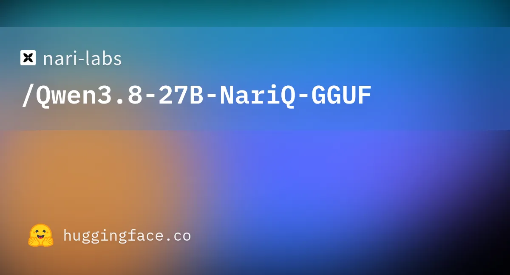
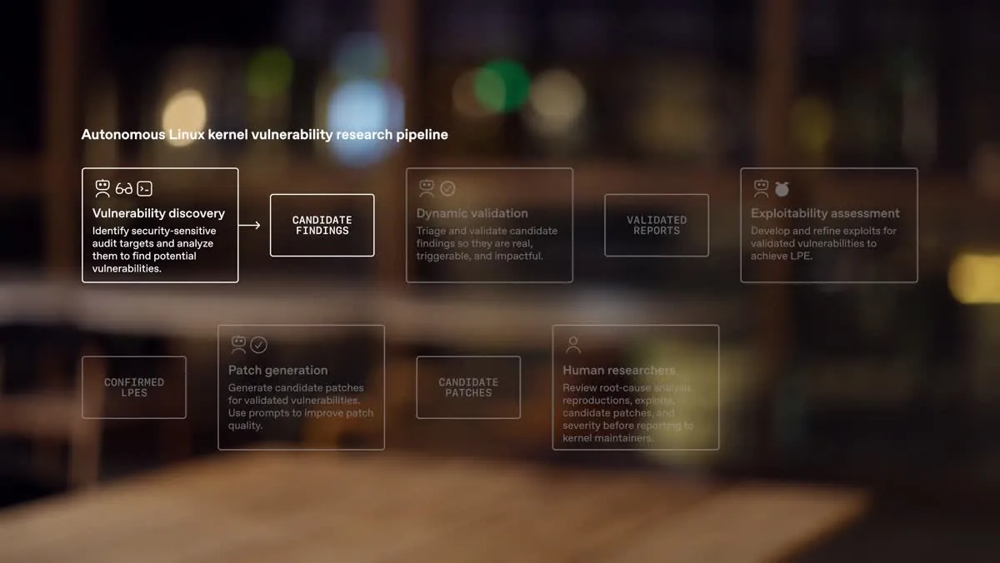
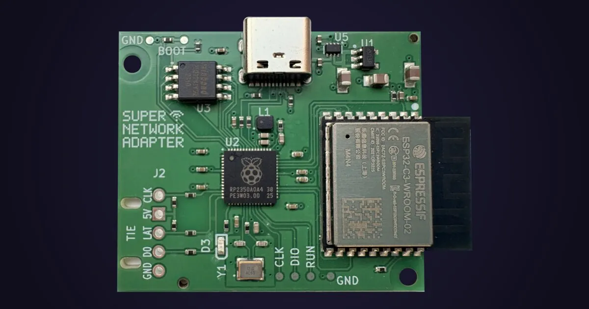

Ladybird alpha on a Mac, running Simon Willison's in-browser video compressor (image: simonwillison.net). Inset: @almonk's screenshot of a modern site rendered in Ladybird.
Lead story · Download it tonight
Ladybird, the browser with a brand-new engine written from scratch, is out in alpha. Download it and try your favourite sites
Not Chrome, not Firefox, not WebKit: its own engine. Free alpha for Mac and Linux.
Every browser you use today runs on one of three engines. Ladybird built a fourth, from the ground up, and you no longer have to compile it yourself: there's a Mac download and Linux packages, with automatic updates.
What it is. Chrome, Edge, Brave and Arc all run Google's Blink engine; Safari runs WebKit; Firefox runs Gecko. Ladybird is a fourth, independent engine: its own HTML parser, CSS engine, layout and JavaScript, even WebAssembly. Per Simon Willison, it borrows only a few outside pieces (HarfBuzz for text, Skia for 2D graphics, ffmpeg for video, SQLite). It grew out of the SerenityOS hobby OS and is run by a non-profit.
What's new. The project's post: “Ladybird is now in alpha. You can download it for macOS and Linux.” Until yesterday you had to build it from source. The alpha is a rolling channel with automatic updates. They're honest that some sites won't work and it will crash sometimes; you can report a broken site from inside the browser. And: “We want security nerds to hack it!”
Why people are excited. It was the top story on Hacker News (1,684 points). Simon Willison tried it all day: “It feels fast, the UI is lightweight and intuitive, and most of the websites I've tried to load in it have worked as they should.” Theo Browne: “I used to think this was the dumbest project ever. Agents have fundamentally changed my math.” @almonk: “after a year of chromium wrappers, Arc-knockoffs … here is a foundational new browser engine.”
Try it. macOS: a 71 MB disk image for Apple silicon (macOS 14.4+). Linux: Flatpak (recommended), or apt for Ubuntu 24.04/26.04/26.10 and rpm for Fedora 44. Build sites? Ladybird supports WebDriver and the Firefox DevTools protocol, so you can point your tests at it. Current build: 2026.47.7.
NO SPEAKER makes a MacBook's trackpad talk, sing and rap with its haptic motor, speakers muted
Mute your Mac. The trackpad still talks. One curl command, about 90 seconds.
♥ 25.8k🔖 11.4k👁 2.4MHN 306 ptsGitHub ~1.5k ★MIT
Read the storyFrame from @codycollier's demo: the Mac's speakers are muted while NO SPEAKER sweeps the trackpad's motor to 977 Hz.
There's no speaker in a MacBook trackpad, just a small haptic motor that taps the glass so you “feel” a click. NO SPEAKER drives that motor up to 4,000 times a second, fast enough to make audible sound, and shapes it into a voice. In the README's words: “It talks, sings, raps, and becomes an instrument under your finger.”
Cody Collier's demo post (Saturday afternoon) became the most-liked dev post of the weekend: 25.8k likes and 11.4k bookmarks, and it reached 306 points on Hacker News on Sunday. The repo was created on Nov 22 and already has about 1,550 stars. It's one Swift program, MIT licence.
Needs: a Force Touch trackpad (MacBooks from 2015 on, or a Magic Trackpad 2+), macOS 12+, and Xcode or the Command Line Tools. Put the laptop on a table, not your lap, and hands off the glass. Try --voice Daniel or --sweep (100 Hz to 4 kHz).
Spaceman: a free tiling window manager for Mac, launched with a video people called genuinely scary
Option-1, 2, 3 jumps to a full-screen app or workspace. Free, MIT, Apple silicon.
♥ 4,588🔖 2,895👁 474.9kGitHub 266 ★MIT
Read the storyFrom Kit Langton's horror-movie-style launch video: Spaceman tiling five apps on one workspace, with the workspace HUD at the bottom.
Spaceman tiles your Mac windows into neat layouts and gives you ten numbered workspaces (1–5 on the main display, 6–10 on a second one), a little HUD showing where you are, drag-to-rearrange and a local command-line tool. It's from Kit Langton at Anomaly, the team behind the Hex dictation app.
The launch post (4.6k likes, 2.9k bookmarks) is a short thriller that happens to be a product demo; @thdxr quoted it with “this video genuinely scared me”. In replies Kit explains how he actually uses it: “the ability to just hit option 1, 2, 3, etc. to immediately jump between fully maximized windows of particular apps.” He pushed version 0.3.3 overnight with focus fixes.
Before you install: the README says to turn off AeroSpace, yabai, Amethyst or any other window manager first, or they'll fight over the same windows. It uses macOS Accessibility permissions, needs no SIP changes, and is a signed, notarized preview for Apple silicon. MIT licence.
datasette-charts: drop any table in and it suggests credible charts, all in a browser tab
Simon Willison's new plugin picks charts for any data. Try it in Datasette Lite, no install.
♥ 155🔖 123👁 21.7kOpen source
Read the storydatasette-charts suggesting chart types from the data itself (image: simonwillison.net).
Datasette is Simon Willison's open-source tool for exploring SQLite databases in the browser. His new datasette-charts plugin looks at whatever table or SQL query you have open, shows a row of suggested chart thumbnails built from your real data, and opens the full chart with editing tools when you click one. It uses D3 and Observable Plot under the hood.
Two nice details: the charts aggregate all rows, not just the first page of 100, and the chart's state lives in the URL fragment, so you can bookmark or share a chart. He says he built it “with a lot of help from Fable 5.2.”
The demo runs entirely in your browser via Datasette Lite (Python compiled to WebAssembly).
win4wine: use the real Windows XP taskbar and Start menu as your Linux desktop, running on Wine
XP's actual explorer.exe as a Linux desktop shell. Your Linux apps get XP window frames.
HN 228 ptsGitHub 317 ★LGPL-2.1
Read the storyGitHub card for win4wine.
A Japanese hobby project that runs Windows XP's own explorer.exe on a patched Wine as the desktop shell for Linux. The taskbar, Start menu, desktop and folder windows are the genuine XP ones, and your Linux apps show up in XP frames on the XP taskbar.
No Microsoft files are included: the installer pulls only the needed files from your own XP ISO. No ISO? It can use the ReactOS shell instead (a Windows 2000-style classic look). It reached 228 points on Hacker News on Sunday.
Be warned: the author calls it a personal experiment, only tested on a fresh Debian 13 via the install script, and recommends a VM. It builds Wine from source, which takes about 1.5 hours on 4 cores. LGPL-2.1.
TRY ITgit clone https://github.com/mikuta0407/win4wine.git ~/win4wine # then follow INSTALL.md, in a Debian 13 VM
My speakers are muted, every sound you hear is coming from the trackpad itself.@codycollier · 25.8k ♥ · post
This video genuinely scared me.@thdxr on Spaceman · 2.4k ♥ · post
Now I'm hyped to have another real browser engine!@theo · 3.0k ♥ · post
Local AI & open-source tools

Local AI · squeeze a 27B model
NariQ squeezes Qwen3.8-27B into a 10 GB file and claims full-precision results on coding-agent tasks
A 27B coding model in 6.8–10 GB. NVIDIA on Linux, one script. Needs their llama.cpp fork.
HN 153 ptsHF 64 likesApache-2.0
Read the storyHugging Face card for the NariQ release.
Quantization shrinks a model by storing each weight in fewer bits, usually at some cost in quality. Nari Labs released NariQ files of Qwen3.8-27B at 3, 2.5 and 2 bits per weight: 10.1 GB, 8.4 GB and 6.8 GB (plus a 0.9 GB vision add-on). Their headline claim is “BF16-level on long-horizon agentic tasks”: their own charts compare it with the full model and with Unsloth's quants on coding-agent benchmarks. Those are the authors' measurements.
The catch: stock llama.cpp, Ollama and LM Studio can't load these files yet. You need the nari-llama.cpp fork. On Linux with an NVIDIA GPU (driver 570+), one script downloads the fork's binaries and the model, checks them, and fits the context to your VRAM. Apache-2.0. Hacker News: 153 points.
gBench: Google's open-source test bench for local models. Point it at Ollama and see how it scores
86 eval suites plus speed tests, against any OpenAI-compatible endpoint, Ollama included.
♥ 1,661🔖 942👁 66.3kGitHub 145 ★
Read the storygBench's launch image (@googlegemma).
When you swap a local model or a quant, how do you know it's still good? gBench, newly open-sourced by the Gemma team at Google DeepMind, measures two things: how fast your setup serves (on your own hardware) and how capable the model is, in three tiers: academic eval suites, quick “Golden Set” smoke tests and an agentic quality suite. It also checks chat templates, a common source of silent breakage.
In the post's words: “All you have to do is bring your own OpenAI-compatible endpoint (vLLM, Ollama, etc.)”. The base package is meant for laptops and remote endpoints; it never installs vLLM or PyTorch itself. 1.7k likes and 942 bookmarks.
procgen-kit: an LLM writes a short Python recipe, and a C++ core turns it into a checked, adjustable 3D model
Doors, gates, shopfronts as parametric 3D kits. Works with local models via Ollama or MLX.
♥ 205🔖 286Repos created Nov 23
Read the storyKits generated with Procgen-Hy4 (image: @WrongNebula).
Ask an AI for a 3D model and you usually get one frozen mesh. procgen-kit works differently: the model writes a small Python kit builder, and a C++20 core turns it into a parametric geometry graph with controls you can sweep (diameter, wall thickness and so on). Then it checks the result in one command: closed manifold meshes, every control pushed to its limits, parts that actually touch, and MuJoCo physics collisions. It also renders the result.
Any LLM can drive it: OpenRouter or OpenAI, or local through Ollama, LM Studio, llama.cpp, vLLM or MLX. A sibling repo, procgen-hy4, is the version tuned for Tencent's Hy4. The examples include a turntable, a city gate, a metro entrance and a door knocker. The Hy4 post got 205 likes and 286 bookmarks.
What happened and what you can try, explained plainly and without exploit details.

Security · open source
An AI found 948 ways to get root on Linux; now an open-source tool lets you shield servers before patching
Shirudo uses eBPF to block an exploit on a live system, no restart, while you patch.
♥ 14.3k🔖 8,926Kernel post ♥ 2.2kBSD-2-Clause
Read the storyFrom OpenAI’s video: the “autonomous kernel vulnerability research” pipeline. Inset: the Shirudo announcement image.
Two related posts from OpenAI overnight. First, the research: in a mid-October scan of the Linux kernel master branch, its security model found and exploited 948 unique local privilege-escalation bugs (ways for a normal user to become root), at a reported $1.2M in API credits, and the team worked with maintainers to get fixes upstream.
Second, the tool: Shirudo, built with Cisco, is an open-source runtime that uses eBPF (small, kernel-verified programs that run inside Linux) to load signed “shields” that block a vulnerable code path on a running machine without a restart, so you have time to test the real patch. You can watch what a shield would affect before enforcing it. OpenAI's example: a generated shield blocked a Java4Shell attempt on a live Elasticsearch.
It's early, but the code is public (BSD-2-Clause, 780 stars), with docs and an invitation to contribute shields. The announcement got 14.3k likes and 8.9k bookmarks.
LiveOverflow's next episode on the libheif heap overflow: hand-crafting .heif image files
A follow-along video series on how one image-library bug actually works.
♥ 173🔖 51YouTube
Read the storyThumbnail of the new episode (@LiveOverflow).
LiveOverflow makes some of the most beginner-friendly security videos around. His ongoing series picks apart a heap overflow in libheif, the open-source library many apps use to read HEIC/HEIF photos (the iPhone format). In this part he starts building .heif files by hand to understand the format the bug lives in.
Good evening viewing if you've ever wondered how a single malformed image becomes a security bug. (He opens with: “Sorry for the delay, got distracted by GTA 6.”)
Get your SSH private keys off your disk: let your password manager be the SSH agent
Malware that scans your disk can't steal keys that aren't there. Ten minutes with Bitwarden.
HN 164 pts
Read the storyThe post's cover (jola.dev).
The argument is simple: a private key sitting in ~/.ssh can be copied by any malicious package or script that reads your disk. The author moved his keys into Bitwarden's built-in SSH agent (1Password and the Mac's Secure Enclave can do similar jobs) and deleted the on-disk copies.
The setup: enable the SSH agent in Bitwarden's settings, then point SSH at its socket with IdentityAgent ~/.bitwarden-ssh-agent.sock in ~/.ssh/config and export SSH_AUTH_SOCK=~/.bitwarden-ssh-agent.sock in your shell. Check with ssh-add -L, and only then remove the files. 164 points on HN.
TRY ITssh-add -L # after setup: should list keys served by your password manager
Matt Pocock's idea: give your coding agents and your team one shared Slack-like board
Every agent and human gets an identity; agents can ping people, or other agents.
♥ 3,475🔖 5,759👁 338.8k
Read the storyMatt Pocock's self-built “cookout” board: he and his agent talk in channels and threads (screenshot from his post).
Vercel launched a product called Board, and the most-bookmarked reaction wasn't about the product but the pattern. Matt Pocock (TypeScript educator) called it “a genius idea, but I think most teams should build it from scratch”: “Basically just a private Slack workspace for your agents AND developers.”
Why it helps: “Each locally running agent has its own identity on the board. As does every human!” If your agent needs an answer from a teammate, it pings them (or their agent) instead of stopping. He suggests unread messages could act as a queue that remote agents use to hand work to local ones. That night he posted the board he'd built for himself (pictured). The post has 5.8k bookmarks on 3.5k likes.
An ASCII MMORPG where every material has its own symbols, and rain is letters flickering on surfaces
A solo artist's text-character RPG went viral. How the look works, in his words.
♥ 1,516🔖 371Repost ♥ 12.6k
Read the storyAnsenjeo's character screen: the hero and their armour drawn entirely in text characters, with a material palette (Iron, Bronze, Moonsteel…) at the top.
Ansenjeo is building “my dream ASCII MMORPG/ARPG”, and his clips keep spreading: a repost of one by @0xrinx reached 12.6k likes, and his own new character-screen clip got 1.5k. Everything, from cypress trees to a waterfall to chainmail, is drawn with keyboard characters on a grid.
The mechanic. Look at the armour screen: each material has its own symbol set (#% for iron, &o for bronze, $s for silver…). Asked whether that's how it works, he replied: “There are some details that had to be worked out with custom shaders, like how many shades to use and which symbols would represent each material.” On rain: “simply having symbols briefly appear on different surfaces adds so much to the feeling of rain.”
Not playable yet: he says he's waiting for Steam page approval and looking for a publisher. @0xrinx's post says he's an artist, not a coder, and Claude writes the code; that's their description, not his.
A math AI proved a Celeste Classic speedrun can never be beaten, frame for frame
The PICO-8 game was translated into Lean, then the 2,843-frame route proven optimal.
HN · Nov 24
Read the storyImage: Harmonic.
Celeste Classic is the free PICO-8 original of the indie hit, 30 mostly independent rooms. Tool-assisted speedrunners had found a way to finish it in 2,843 frames. Harmonic's AI, Aristotle, translated the game's code into Lean, a language for machine-checked proofs, and then proved that no input sequence can do better, without trying every run. It worked room by room, proving general facts about each one.
In a separate category it also set a new record and proved that time optimal too. It's a neat look at a game's movement rules turned into maths. HN: low points so far, but worth the read.
Builds makers were sharing since yesterday's edition, each with where to find the how-to.

Workbench · retro console
A Wi-Fi adapter for the original Super Nintendo that syncs save files with your phone's emulator
A Pico 2 W in the controller port, so SNES saves follow you to RetroArch.
HN 80 ptsPico 2 W
Read the storyThe Super Network Adapter (image: boland.dev).
The SNES never had a network port, so Danny Boland used the controller port: it's a tiny serial bus a game can drive bit by bit. His Super Network Adapter started as a Raspberry Pi Pico 2 W plus a few pull-up resistors; the RP2350 handles the console's 5 V logic directly and uses one core for the console link, one for Wi-Fi.
The killer feature is Save Sync: he patches ROMs (via a flash cart) to send battery-backed saves through the adapter in checksummed chunks, so you can carry on the same save in RetroArch on your phone and back. He also patched Link to the Past to pass game context to an LLM for dialogue. The PCB was ordered from JLCPCB, and the 3D-printed case is on its way. HN 80 points.
To build: the write-up has the protocol and wiring; firmware repo below (early).
Rockbox now boots straight up on the iPod nano 5G, no computer needed after install
An untethered exploit turns a 2009 nano into a free, offline music player.
HN 86 pts
Read the storyRockbox booting on an iPod nano 5G (image: viktorkrapivin.com).
Rockbox is open-source firmware that replaces the stock software on old MP3 players (more formats, themes, no iTunes). Until now, custom code on the nano 5G needed a computer at every boot. Viktor Krapivin adapted an older font-based exploit and found a partition setting that skips a validation step, giving a cold, battery-powered boot straight into Rockbox.
He also got the trick working untethered on the nano 7G and expects the 6G to follow. His motivation: “an up-to-date music player without an internet connection.” The post links the boot stub, the emCORE port with install steps, and the Rockbox source. HN 86 points.
Two weekend hacks from one couch: an ESP32 that makes a dumb TV remote run the PC, and radiators hacked over RF
An ESP32-C3, an IR receiver and some Claude help, so you never leave the sofa.
HN 42 + 14 ptsESP32-C3
Read the storyqsantos's ESP32-C3 IR bridge on a mini breadboard; inset: the opened-up board of one of the RF radiator remotes he reverse-engineered (images: qsantos.fr).
The TV: an old non-smart TV is just a monitor for his desktop. He wired an IR receiver and transmitter to an ESP32-C3 Mini on a breadboard, decoded the remote's RC-5 codes, and now the TV remote wakes the screen, opens the player, and even launches emulators (DuckStation, PCSX2, Dolphin, Cemu, ES-DE) with two Xbox controllers from one button.
The radiators: his wall-mounted Acova remotes use encrypted 868 MHz RF. With an RTL-SDR, a Heltec V3 board and an SWD probe on the remote's chip, he captured what went into and out of the radio and had Opus 5.5 work out the transforms. A nice, honest how-to of what AI helped with and what it didn't. HN 42 and 14 points.